File · Muzrai Department · Mysore
A dancer bills the state Rs 12/5/4 for dancing at the Nandi car festival. The ruling: tafe is not a temple duty.
Rituals · I
The devadasi, from temple to file · c 900–1947
Married to a god. Paid by the temple. Removed by a file.
Part I
i
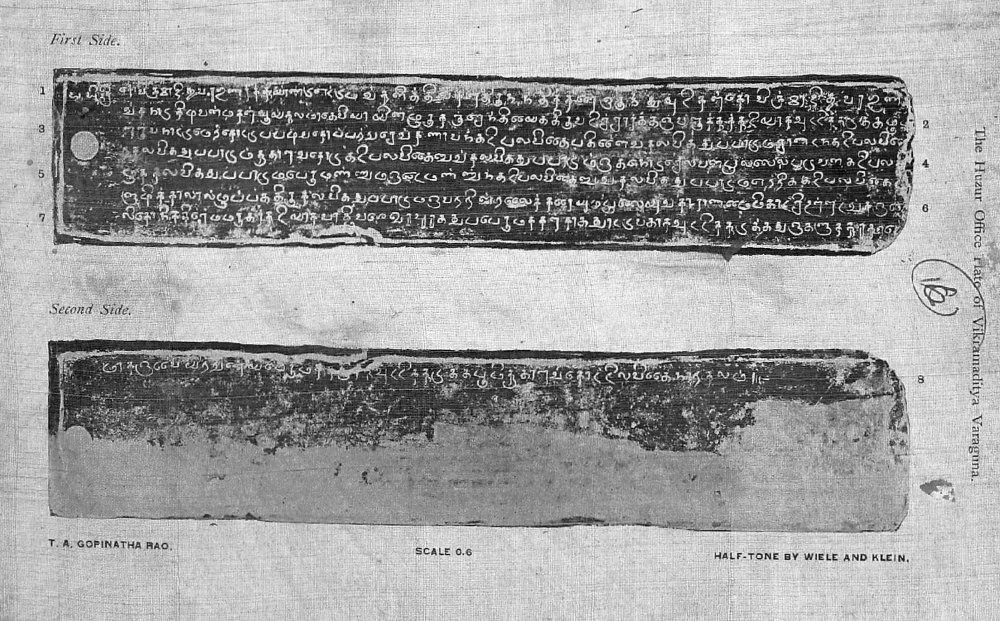
ii
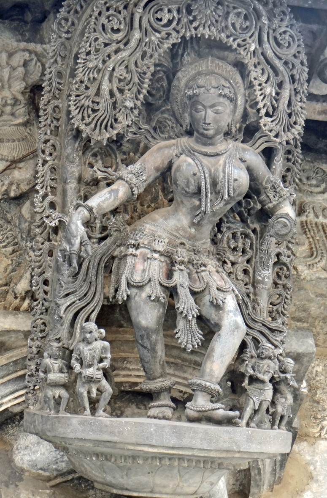
iii · The ritual
Married to the temple's deity with a tali.
Taught dance and song by a nattuvanar.
Danced in worship and before the deity in procession.
Paid in temple land and allowances.
iv
As European painters saw her
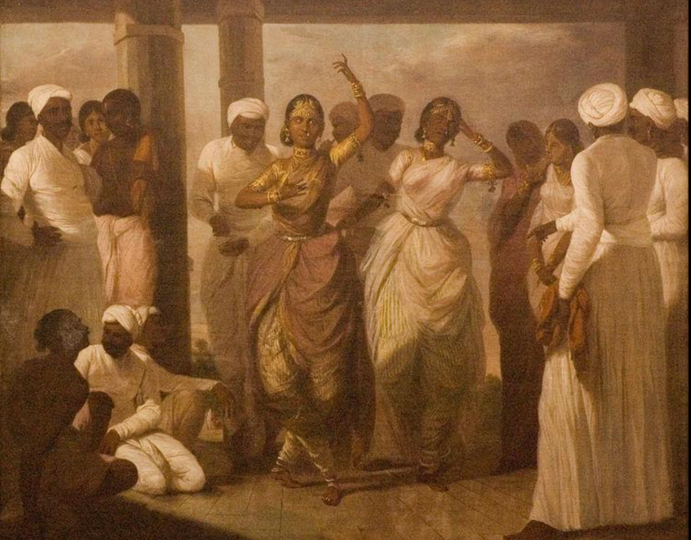
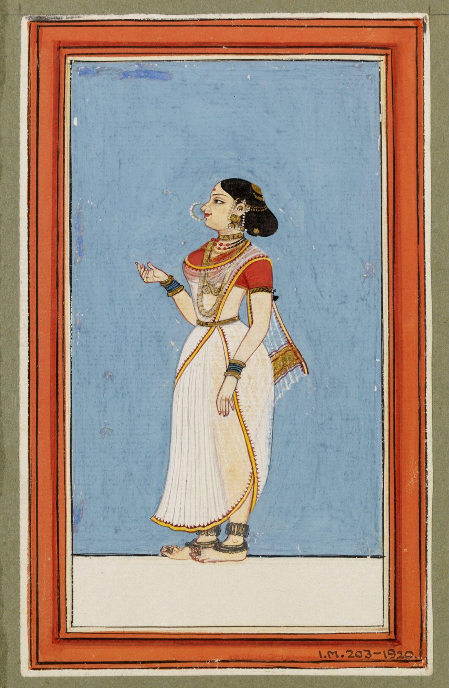
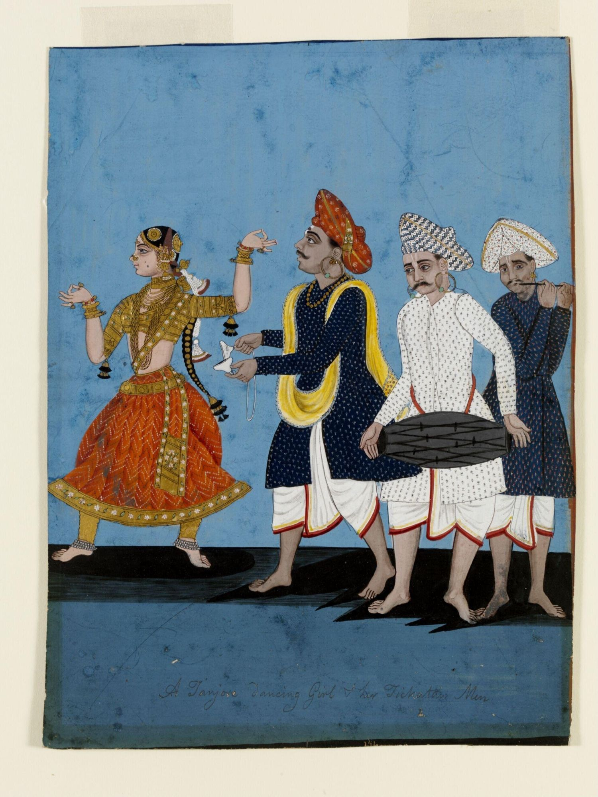
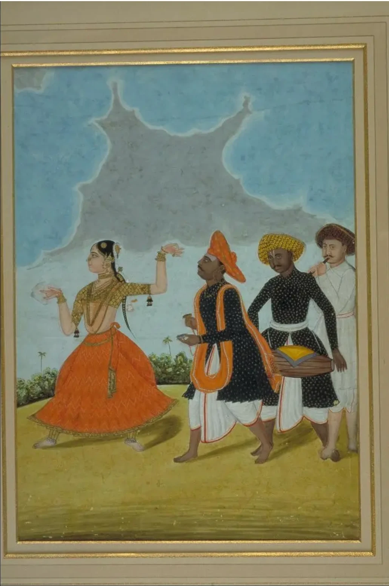
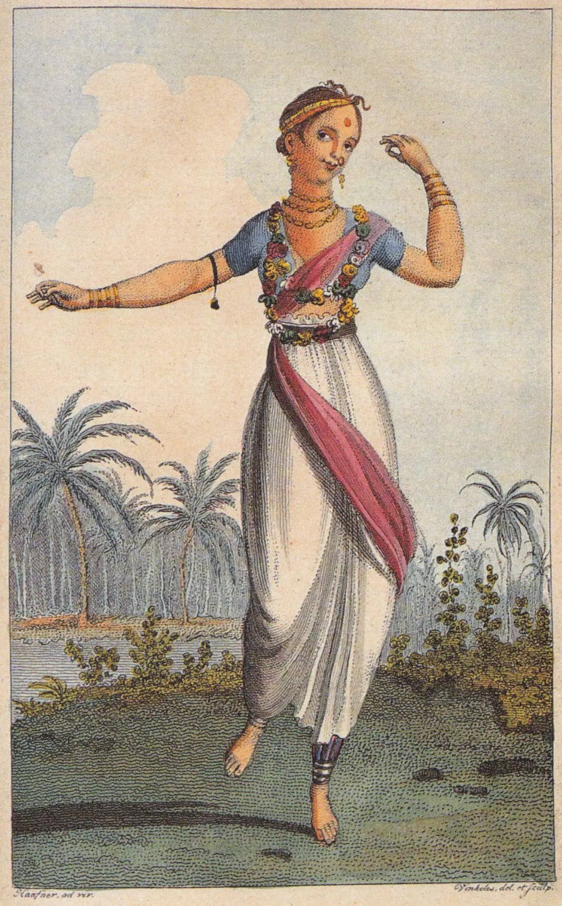
v
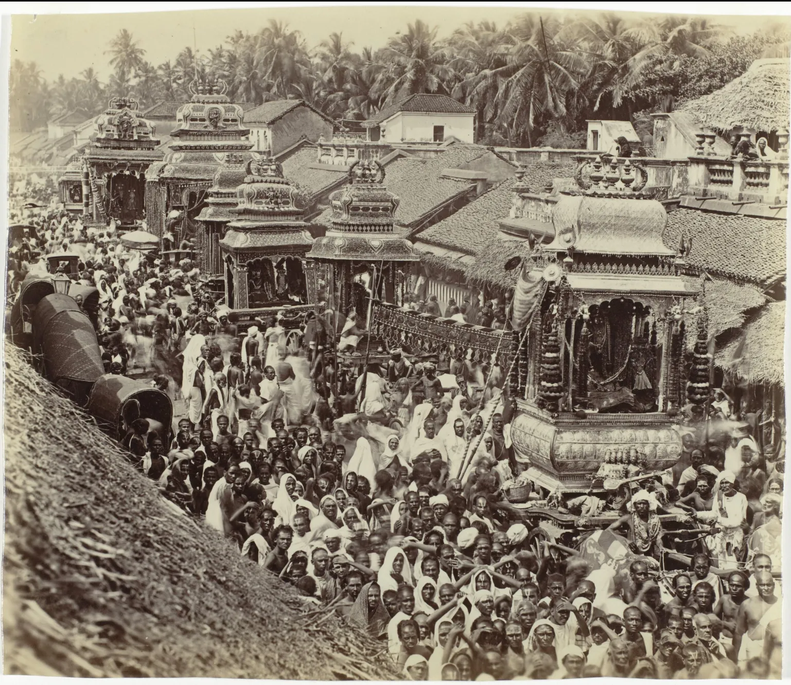
vi
Studio portraits, late 19th century
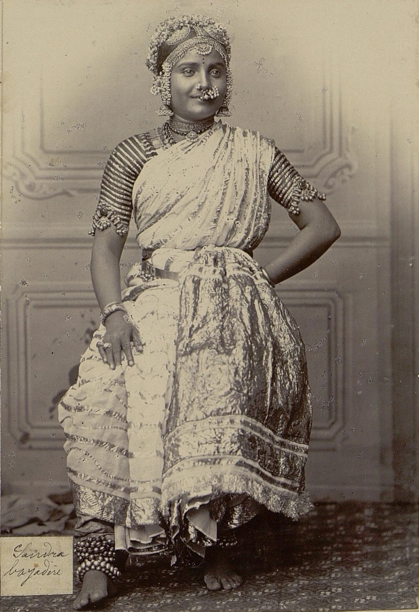
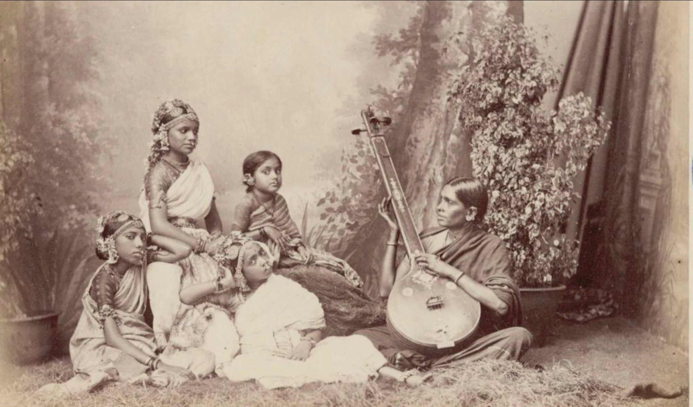
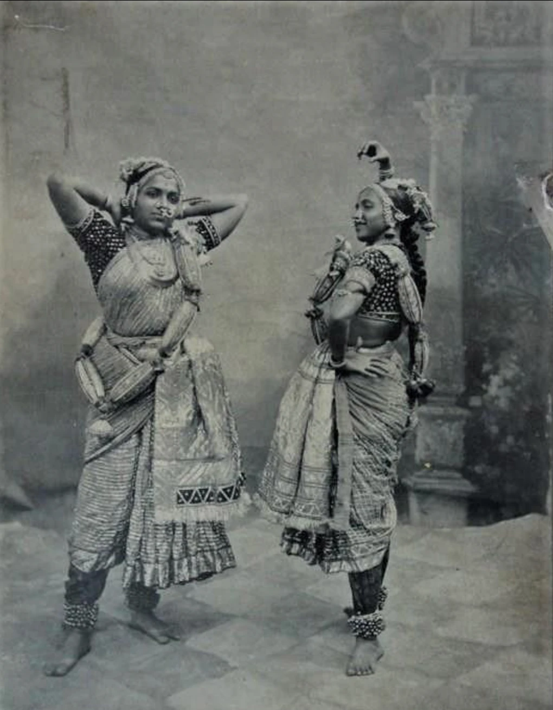
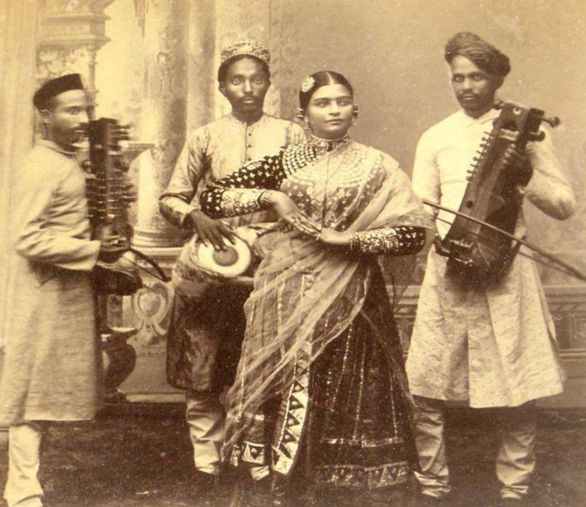
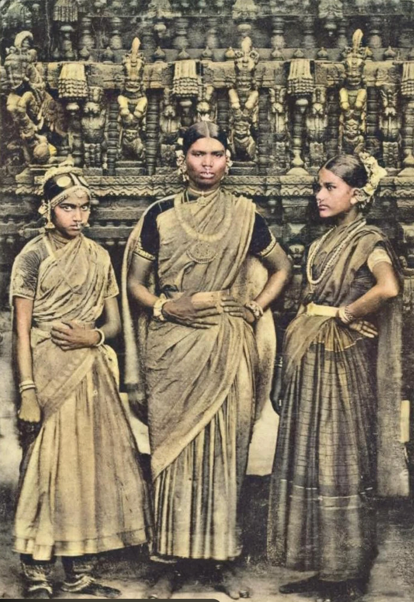
1905 · Nanjangud · petition in Kannada
Dance is our only means to serve god and to earn a living.
Kittasani · Nanjasani · Kalyanisani and six others
Reply · typed in English
Forwarded.
"Unconcerned with the palace."
Part II
File · Muzrai Department · Mysore
A dancer bills the state Rs 12/5/4 for dancing at the Nandi car festival. The ruling: tafe is not a temple duty.
Tasdik patti · revised
Nanjangud's dancers are struck off the temple pay list.
Government Press, Madras
Edgar Thurston's Castes and Tribes of Southern India files her as an entry: "Dēva-dāsi".
1909
Government Order · Mysore
Dancing women are removed from temple service.
ORDEREDThe Mysore Tribes and Castes · vol 4
The state's ethnographers caption a dancer "Natuva Dancing Woman".
Act · 9 October 1947
The Madras Devadasis (Prevention of Dedication) Act bans dedication outright.
The dance went on to the stage.
The women stayed in the file.
Notes in order of appearance · Chicago Manual of Style, 17th ed.